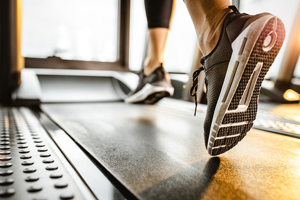

Somos la empresa de equipos fitness más importante del país y nos dedicamos exclusivamente a este rubro hace más de 10 años. Nos respalda una larga trayectoria en el mercado, la cual incluye sucursales propias, presencia en shoppings comerciales y distintos representantes oficiales en todo el país. Comercializamos más de 100.000 equipos fitness en Argentina a través de todos estos años. Ofrecemos la más amplia variedad de marcas y modelos de equipos fitness, ya sea en equipos de uso residencial, nivel semi profesional o profesional. Cubrimos todo tipo de necesidades en lo que concierne al cuidado del cuerpo y la salud, y trabajamos con equipamiento para complementar las rutinas de ejercicio. Luego de 10 años, fuimos observando las necesidades, mejorando nuestro catálogo, reemplazando y optimizando equipos que no cumplían las expectativas. Nos diferenciamos en que sólo trabajamos con las marcas más confiables, con equipos certificados con tecnologia actualizada, y asesoramiento personalizado. Nuestra larga trayectoria en el mercado, junto a la dedicación exclusiva al rubro, nos permite garantizar el mejor servicio de venta y posventa.
En Damofit somos pioneros en la venta de equipamiento para entrenar en Argentina. Contamos con más de 15 años vendiendo los mejores equipos fitness al mejor precio. Iniciando con nuestro local en el barrio de Boedo, ahora continuamos brindando nuestros servicios desde el barrio de Floresta desde donde realizamos envíos a todo el país. Somos distribuidores oficiales de las prestigiosas marcas Fitage, Zellens, Corplus Fitness, Omiko y Fithouse. Nuestra forma de operar consiste en relacionarnos directamente con los importadores sin intermediarios, así podemos ofrecerte productos a precio de fábrica, con garantías oficiales, para que sigas confiando en nosotros. Nuestro horario de atención telefónica y online es de Lunes a Viernes de 10 a 18 hs.
En Adlife somos pioneros en la venta de equipamiento para entrenar en Argentina. Contamos con más de 15 años vendiendo los mejores equipos fitness al mejor precio. Iniciando con nuestro local en el barrio de Boedo, ahora continuamos brindando nuestros servicios desde el barrio de Floresta desde donde realizamos envíos a todo el país. Somos distribuidores oficiales de las prestigiosas marcas Fitage, Zellens, Corplus Fitness, Omiko y Fithouse. Nuestra forma de operar consiste en relacionarnos directamente con los importadores sin intermediarios, así podemos ofrecerte productos a precio de fábrica, con garantías oficiales, para que sigas confiando en nosotros. Nuestro horario de atención telefónica y online es de Lunes a Viernes de 10 a 18 hs.